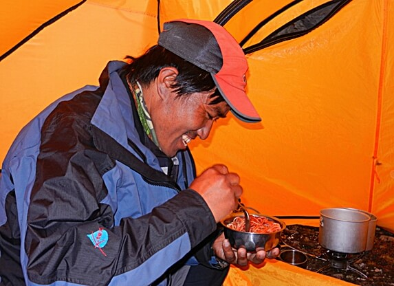

Unsere Geschichte
Ngima Grimen Sherpa · Singu Chuli 6501 m

2012 führte uns eine gemeinsame Expedition mit Ngima Grimen Sherpa zum Singu Chuli in der Annapurna-Region Nepals. Das Basislager lag auf rund 4800 Metern. Aus dieser Begegnung entstand eine Freundschaft und die gemeinsame Vision, mit Bergreisen auch für die Menschen vor Ort etwas zu bewegen.
Am 25. Dezember 2012 verstarb Ngima bei einem tragischen Verkehrsunfall. Sein Tod war ein einschneidendes Ereignis und bestärkte uns darin, unsere gemeinsame Idee weiterzuführen.
Aus dieser Geschichte entstand HÖHENBERGSTEIGEN – ein karitativer Verein, der die Leidenschaft für Berge und Reisen mit sozialem Engagement verbindet.
Heute unterstützen wir mit unseren Aktivitäten lokale Familien, Schulen und Projekte, insbesondere in Nepal und Kirgistan.
Was mit einer Begegnung begann, ist zu einer Aufgabe geworden, die uns bis heute begleitet.
Weitere Expeditionen und Reisen findest du in der Chronik auf unserer Startseite.